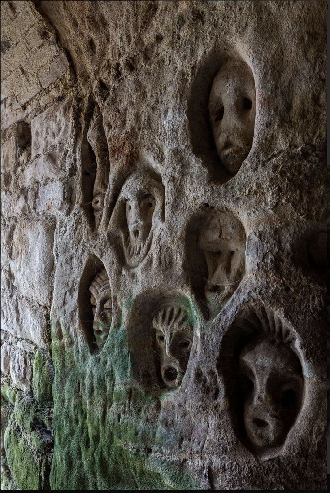
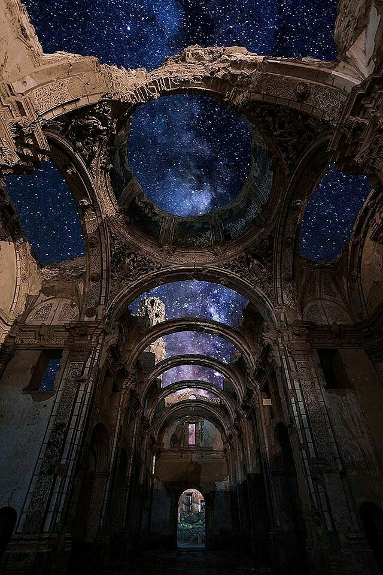
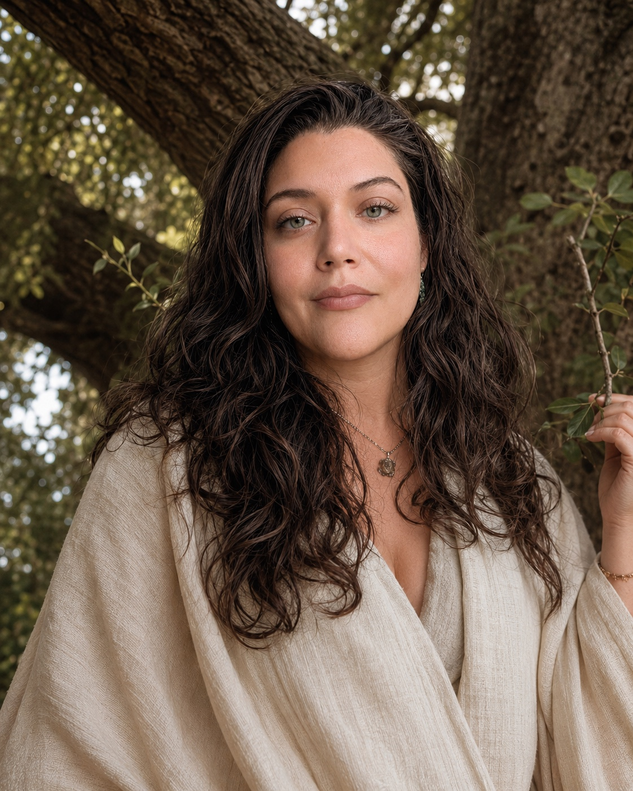
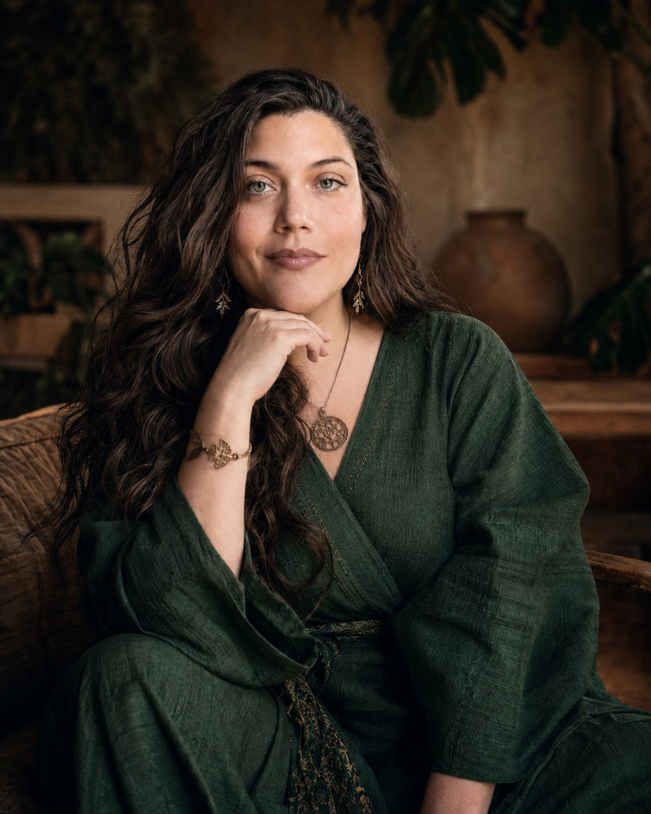
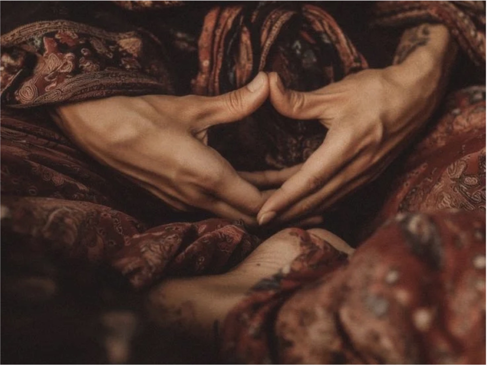
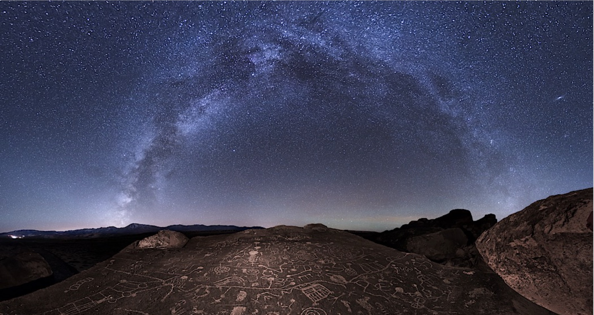
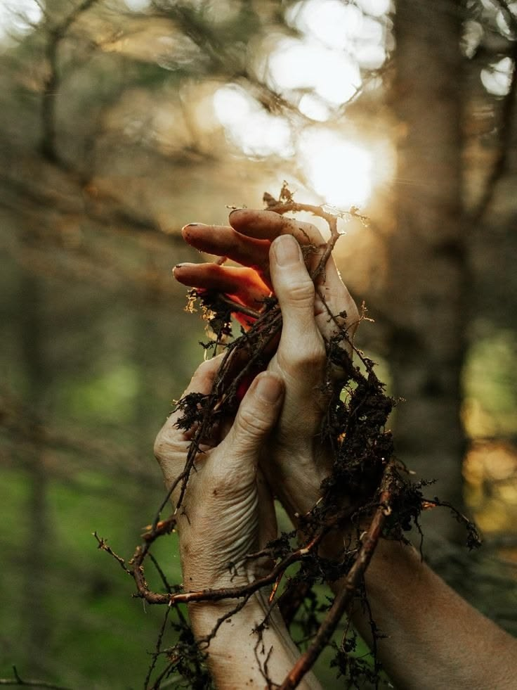

The Year Read Through the Roots
Mesoamerican, Caribbean, and African ways of keeping time beside the Western wheel, credited by people. 45 to 60 minutes.
An experiential apothecary for the restoration of an animist relational practice and world view.
Founded and stewarded by Adi Marie · Tended without interruption since 2010 · Southern California · Serving worldwide
The Animist Apothecary exists within an animist frame, and explores, exercises, and expresses itself as such.
Awakening more fully to the ever-present beauty of creation upon this world.
We are here for the restoration of balance and peace. We serve as emissaries and intermediaries and, at our very best, as honorable interdimensional diplomats.
Humanity is preparing to emerge onto the planes of galactic consciousness, and it is imperative that we assume the dignity of the responsibilities that accompany such work, especially at such times. We begin with the respectful, restorative responsibility of our inheritance of this Earth, and of our many, many, many other-than-human, at times non-corporeal, Kin.
What does it mean to emerge as an entheogenically awakened society?
This is the premise of the School, of the Foundation, and of the Ministry.
The Animist Apothecary rests on an understanding older than any of its offerings — older than the hands that tend it. The Earth is alive and sovereign. The cosmos and the stars, the plants and the animals, the waters, stones, mountains, winds and fire, the ancestors and the elemental forces — all carry personhood, agency, and sacredness. We do not treat the world as a resource. We know it as a relative.
From that knowing, everything else follows. The spiritual life is fundamentally relational — a continuous, ceremonial direct-relationship with the living forces of creation, in which communion is real, mutual, and reciprocal. Ceremony is how that relationship is made tangible. Not metaphor. Practice.
We live in a season of severance — raised inside a story in which the Earth is inert, the dead are gone, and the sacred lives somewhere far away. The loneliness, the unspent grief, the unraveling of the living world: these are not separate problems. They are the symptoms of broken relationship.
And yet — everywhere, the gifts are waking. Sensitivity that will not be numbed. Dreams that arrive with instructions. A pull toward the unseen that no amount of productivity can silence. More people than at any time in living memory are being called — and they are waking inside a culture that has forgotten what they are for, without the villages, the elders, and the ceremonies that once received them.
‘The earth is asking for healers. The times are asking for those willing to go into the underworld and come back with something real. This work is my answer to that call — and it is an honor to walk that path alongside those who are ready.’ — Adi Marie
The Apothecary exists for this exact moment: to restore the old relationships, and to accompany those being called into their gifts. We hold, with our whole hearts, the premise of an entheogenically awakened society — so that what is received in the otherworlds returns as goodness in this one, shaping how we live and play and create and love.


The world is more porous than the world insists.

The most important part of this is who and what I am, and have always been, by birth. There has been a dismemberment: an intentional deconstruction, a severance of ancestral roots, of lineages, of the ancient families of power through whom these kinds of gifts come forth into the world. It came through colonization, imperialism, and the diaspora, the diasporic dismemberment of these families of power, of these lineages of medicine people. There is no true teacher who holds the oral traditions of who and what we are intact. This is by blood, this is by nature, this is by the ancestry of my bones, this is by the ancestry of my spirit and of my soul.
That being said, otherworldly initiating bodies and forces have initiated me across the developmental thresholds of my life. They have deeply molded, shaped, and changed the infrastructure and very nature of my life, and the very nature of reality, in irrefutable ways. This has been extremely challenging to do on my own for the majority of my life. I did have support from different plant medicines, from different animal spirits, from different celestial and otherworldly guides, as well as my own soul, my own oversoul, and the different beings who have come forward at different times to help me further become.
It wasn't until recently that I was brought into a 40,000-year intact oral tradition, a closed lineage, by the Dagara people. Many people within that clan, within that family of medicine people, priests, priestesses, shamans, and diviners, have helped me ground and embody what has been moving through me and as me, like oceanic swells, onto the shorelines of this life.
Adi Marie
Poet · Author · Artisan · Diviner
The calling arrived before the language for it. Long before training, before lineage, before the medicine basket — there was a felt sense of the world being more porous than the world insists. The dead were not gone. The land was not silent. The body knew things the mind had not been taught to translate.
The first formal door was the hands. Licensed bodywork in 2010, the somatic foundation under everything that followed. To work with the body honestly is to apprentice to a way of knowing that does not lie. From there the path opened — initiations into traditions that had been waiting, study with elders who recognized what I had been carrying since childhood, ceremony as the structure that could hold it.
Sixteen years on, the work has gathered itself into a practice. Solo sessions. Community ceremonies. Long arcs of accompaniment. The same intention threads through all of it: to meet what is real, to hold what others cannot hold, and to walk alongside those whose own calling is asking something of them they cannot yet name.

I am part of a cultural refugee diaspora, descended from practices already syncretic through colonization and empire. In Central America, successive colonizations have diluted, and in places abjectly destroyed, my family’s relationship to animism and earth-based spirituality.
The Lenca people, as far as we can trace; the Maya, Pipil, and Ch’orti’; the Taíno and the Arawak.
The Caribbean, with its deep African influence: ancestors from Senegal and from the Canary Islands.
Galician and Castilian roots and, further back, the Celtic peoples.
“No one of us in the modern world comes from a single cultural heritage. There’s a confluence of seas, of oceanic tides within me, and planes of remembering that I am synthesizing within my own life and bringing forward in my life’s expression.” — Adi Marie
Caribbean, African, and Mesoamerican ancestry is expressing itself through me, though I do not have the educational and cultural context that shaped me this way. These are things remembering themselves through me: my ancestors, sharing themselves through the remembrance of my bones.
Based in the canyon lands of Southern California, I offer private sessions and intensives in person, and I am available worldwide for virtual sessions, private travel engagements, and select community events.
“They’re more frameworks that have helped me have a little bit more architecture to how I interface with the raw primal thing that’s expressing itself through and as me.” Adi Marie
She works with doctors, medicine people, therapists, artists, and leaders whose decisions shape the trajectory of this earth ship, all of them united by one commitment: work that changes the shape of a life, not just its surface.
An interview from the practice — on the work, on lineage, and on what these times are asking of us.
Adi Marie speaks at ritual, esoteric, and comparative-religion gatherings, to retreat and event hosts and practitioner trainings, and on podcasts and panels. Her subjects are ceremony, the turning of the year, the ancestors, and the craft of building a container.
Mesoamerican, Caribbean, and African ways of keeping time beside the Western wheel, credited by people. 45 to 60 minutes.
Reverence and rigor in the building of a container. For practitioner trainings and leadership programs. 60 to 90 minutes.
Building a ceremonial calendar from the solstices up. For gathering designers and ritual communities. 45 to 60 minutes.
Holding Western, Chinese, and Dagara elemental systems side by side without merging them. 45 minutes.
Bringing what comes through down into this world. 45 minutes.
Ancestral practice for people without a lineage to inherit. 45 to 60 minutes.
A slide deck in the house style, a one-page seasonal wheel handout, and a list of sources, with an optional five-minute opening practice and, for in-person rooms, a drum.
Ceremony, calendar, cosmology, and craft, for audiences of 10 to 300, in person or live online.
Send the format, the length, and the audience size. She will reply with her availability, the speaker one-sheet, and a recommended talk.
Invite Adi Marie“I’m a poet and an author by nature. I’m an artisan and an artist, and I paint and I write and I sculpt, and there are many works to the creative expression of my arts and my crafts.” Adi Marie
Reflective essays, poetic transmissions, and candid meditations on healing, initiation, and the living world, published in installments.
Read the writings →Poetry, essays, and books are coming from this work. Titles and dates will be announced first in the letters.
ForthcomingThe wheel of the year, the elements, the alchemical arc, and the shamanic cosmos, woven through her ancestral roots and published through the year in diagrams and essays.
In progressThe creative expression of her arts and crafts, shared as it is made: paintings, sculpture, and the work of an artisan’s hands.
Shared in timeThere is the map. There is the terrain.
One premise, held three ways: as pastoral care, as restorative stewardship, and as the formation of those who are called.

The Ministry · the pastoral workThe rites that mark a life, and the ceremonies that hold it. Divination and spiritual counsel. Grief and ancestral work. Ceremonial bodywork. The passing of teaching to those called into lineage. All of it is bound by four precepts: consent, readiness, confidentiality, and the duty to refer beyond our scope.
The covenant →Sacred reciprocity is how the work sustains itself and keeps its doors open. Offerings are tiered so that no one is turned away for lack of means, and what is given at the patron tier supports elders and culture-bearers, ecological restoration, and a community care fund.
Sacred reciprocity →
The Conservatory · the teaching workA training ground and specialized school for forming skilled interdimensional intermediaries: people who can mediate, on behalf of the seen and unseen worlds, between the human and the other-than-human. Here ceremonial practice is formalized and embodied as procedural ritual technology.
The path of the School →The Animist Apothecary is a ministry — a religious and ceremonial body, not a commercial enterprise. Its vocation is pastoral, and its duties are kept the way sacred duties are kept: with devotion, with discipline, and with accountability to lineage.
The ministry’s economic life is ordered by sacred reciprocity — tiered pathways of offering, held so that no one is turned away for reasons of financial incapacity. And it is held with a clear understanding, spoken plainly to every person who enters: this work is not medical or psychological treatment. It is a ceremonial and somatic journey into the depths of being — slow, relational, and sacred.
Those who give at the patron tier do more than enter the work — they endow it. Every arc held in abundance keeps a seat open at the fire for someone in a thin season. This is how a ministry sustains itself without becoming a marketplace: the circle carries its own.
Sacred reciprocity is how the work sustains itself and keeps its doors open. Offerings are tiered so that no one is turned away for lack of means, and what is given at the patron tier supports elders and culture-bearers, ecological restoration, and a community care fund.
This is the restoration of a way of life, a way of being in right relationship. Here you sit in tutelage to the other worlds: to their teachings, their initiations, and their attunements. The aim is to engage interdimensionally with skill, poise, and rapport, and with the artisan’s touch of inspired, skilled mastery.
We begin where every practice begins: with foundational skills and relationship. The School teaches in several studios at once. Each has its own ethos, body of knowledge, and skill set, and all of them follow the same path.
The context every student needs first: the maps that have come before, known and unknown, and your own embodied reading of them.
The key and the legend. What the symbols mean, how the terrains differ, and the principles and working equations that let you find your way.
First-person, lived exploration. Here you gain fluency: to communicate and be communicated with clearly, and to return to your everyday self.
Practice as an intermediary, in service to community and to others.
Classroom study, applied practice, and the tests that show where you stand.
The threshold, held in ceremony, after the clearing work that prepares you for it.
Ongoing mentorship, at whatever depth and intimacy each person is here for.
“We not only are meant to open up to those energies, we’re meant to anchor them down.” — Adi Marie
Some come for the theory, to learn the concepts and explore them for themselves.
Some come to change their lives and the way they touch the lives of others. They sit in ceremony.
Those in careers of service who bring this into their field, and those who choose to move ceremony from a stealth layer to a primary practice, as ceremonial ritual practitioners, interdimensional intermediaries, stewards, and guides.
We need more practitioners out in the world, holding these sacred spaces and these front lines, pollinating the garden of life, and restoring beauty, balance, and harmony. We are here to participate in the miracle. This school is for those called to take part in this way, at this time.

Ceremony is how the web is tended.
A practice of mutual care, ethical sourcing, and the belief that healing must flow where it’s most needed.
My work stands in service to this ethos of ecology — a promise that no one is to be kept, by artifice or construct, from connection with the Rivers of Creation.
There is a door for each way of coming to this work. Whichever you choose, it begins with a conversation.
Divination and consultation, shamanic coaching, and long arcs of spiritual development.
Begin here → For communitySeasonal ceremonies, circles, and gatherings held by relationship and invitation.
See the offerings → For practitionersFormation as a ceremonialist and interdimensional intermediary, with mentorship.
Enter the School → For hosts & the pressPodcasts, panels, retreats, and events. Send a message with the details.
Send a message →A 30-minute Intake & Onboarding conversation. We meet, we learn how you are arriving, and you learn how the room is held.
Screening, readiness, and preparation. No one sits in ceremony without them.
The session, arc, or gathering that fits where you are, held with care.
Aftercare and counsel, so that what you received can take root in your life.
Offerings are held on a sliding scale, and no one is turned away for financial incapacity. Read about sacred reciprocity.
A literal place — altars, hearth, library, garden — where the work is held.
A literal place — altars, hearth, library, garden — where the work is held.
The Apothecary is not only a brand — it is a physical place, slowly built over years. A space where altars are tended daily, where medicines are gathered and prepared, where the work happens within walls that hold their own memory.
The traditions, teachers, and bodies of knowledge that hold this practice in place.
No practice arises alone. What I carry comes through long lines of teachers, traditions, and bodies of knowledge — each owed care, study, and credit.
A field guide to the practices, principles, and protocols of journeying with the unseen realms, ancestral lineages, and spirit kin.
Interdimensional work is not a metaphor. It is the conscious crossing of thresholds — into ancestral memory, elemental kinship, dream territory, the worlds that ride alongside this one. It asks for protocol, posture, and patience.
What we are learning to do is move with reverence between rooms that most of modern life pretends are not there. The ones who go well are the ones who learn the manners of those rooms: how to enter, how to greet, how to listen, how to take leave.
The plant allies, ritual objects, and gathered medicines stewarded in this practice.
What is held in an apothecary is more than substance — it is relationship. Each sacrament gathered here arrives through years of relationship with the plant, the place, the people who tend it. None are taken; all are received.
This page is a slow inventory of what lives on the altars and in the ritual baskets — the leaves and roots, the stones and shells, the smoke and oil, the bones and bowls.
The professional standards, scope of practice, and harm-reduction commitments held within this work.
This work touches what is most sacred and most tender in a life. The ethics that hold it are not abstract — they are the bones of how safe this space can be.
The questions most often asked, answered with care and honesty.
If you're new to this kind of work — or to me — this page is a gentle door. The questions here are the ones I'm asked most often. The answers are honest, not perfect.
What participants, clients, and community have shared after sitting in this work.
This is not a showcase. It is a small archive of what people have offered back — in their own words — after sitting in session, holding a ceremony, completing a year. Each voice is shared with permission.
Podcasts, articles, panels, and platforms where Adi Marie has been featured or invited to speak.
Public-facing work, gathered here for those exploring this practice for the first time, or considering an invitation to a stage, microphone, or page.
The wheel turns; the work remains.
Rooted in Integrity ✶ Guided by the Living World ✶ Held by Community ✶ Offered in Service
If reading this stirred something old in you — that is not curiosity. That is recognition. The web of relation you just read about already includes you; the only question is how consciously you want to live inside it. Send a note. We’ll find an hour, hear what you’re carrying, and see where the work meets you.
Begin with a Conversation